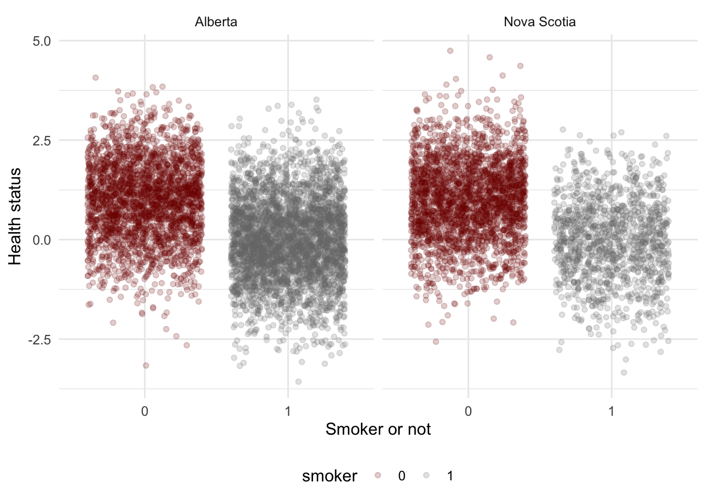

Packages used in this post
library(tidyverse)
library(broom)
library(ggsci)
library(modelsummary)
library(estimatr)
theme_set(theme_minimal(base_size = 12))Paw Hansen
November 3, 2023
New post for my “policy evaluator’s toolbox” series! Today, let’s have a stab at an instrumental variable analysis.
As always, I’ll go over some of the basic intuition but the main focus will be on writing some code to produce a few useful graphs and tables. For more in-depth treatment of the topic, check out the references listed below.
Suppose we wanted to know if smoking affected your health. The core problem is that whether people smoke or not is not random. Rather, it is entangled in all kinds of other factors that might also affect health outcomes: education, gender, job type, and so on. In addition, health might affect smoking status because bad health could cause you to smoke fewer cigarettes or stop smoking altogether.
IV can help us. We need some variable affecting health outcomes only through smoking. Ideas? Economists have naturally had their eyes fixed on taxes — a cigarette tax will affect whether people smoke or not but not their health except through smoking status.
The idea is that we should look for provinces, states, or other units with varying cigarette taxes and then use that variation to estimate the effect of smoking on health outcomes.
To get started, we’ll simulate some data. We begin with a data frame of people and whether they smoke or not:
Then we add health outcomes:
And finally different tax levels on smoking for each of the two provinces:
iv_example_data <- iv_example_data |>
mutate(
province = case_when(
smoker == 0 ~ sample(
c("Nova Scotia", "Alberta"),
size = n(),
replace = TRUE,
prob = c(1/2, 1/2)
),
smoker == 1 ~ sample(
c("Nova Scotia", "Alberta"),
size = n(),
replace = TRUE,
prob = c(1/4, 3/4)
)
),
tax = case_when(province == "Alberta" ~ 0.3,
province == "Nova Scotia" ~ 0.5,
TRUE ~ 9999999
)
)
iv_example_data # A tibble: 10,000 × 5
person smoker health province tax
<int> <int> <dbl> <chr> <dbl>
1 1 0 1.11 Alberta 0.3
2 2 1 -0.0831 Alberta 0.3
3 3 1 -0.0363 Alberta 0.3
4 4 0 2.48 Alberta 0.3
5 5 0 0.617 Nova Scotia 0.5
6 6 0 0.748 Alberta 0.3
7 7 0 0.499 Alberta 0.3
8 8 0 1.05 Nova Scotia 0.5
9 9 1 0.113 Alberta 0.3
10 10 1 -0.0105 Alberta 0.3
# ℹ 9,990 more rowsA first inspection of the data indicates that smoking does have some effect on health—healt status is lower for smokers in both provinces:
iv_example_data |>
mutate(smoker = as.factor(smoker)) |>
ggplot(aes(smoker, health)) +
geom_jitter(aes(color = smoker),
alpha = .2) +
facet_wrap(vars(province)) +
scale_color_uchicago() +
labs(y = "Health status",
x = "Smoker or not") +
theme(legend.position = "bottom")
To estimate the effect, we can run two regressions and take their ratio:
health_on_tax <- lm(health ~ tax, data = iv_example_data)
smoker_on_tax <- lm(smoker ~ tax, data = iv_example_data)
tibble(
coefficient = c("health ~ tax", "smoker ~ tax", "ratio"),
value = c(
coef(health_on_tax)["tax"],
coef(smoker_on_tax)["tax"],
coef(health_on_tax)["tax"] / coef(smoker_on_tax)["tax"]
)
)# A tibble: 3 × 2
coefficient value
<chr> <dbl>
1 health ~ tax 1.24
2 smoker ~ tax -1.27
3 ratio -0.980Another way would be to use iv_robust() from the estimatr package:
There you have it. A super-brief introduction to get you started with IV estimation. There are a whole bunch of additional details I have now shown here as the goal was simply to provide some intuition. But now you have the building blocks to start thinking about using IV in your own work.
Code for this example is largely adapted from Telling Stories with Data↩︎